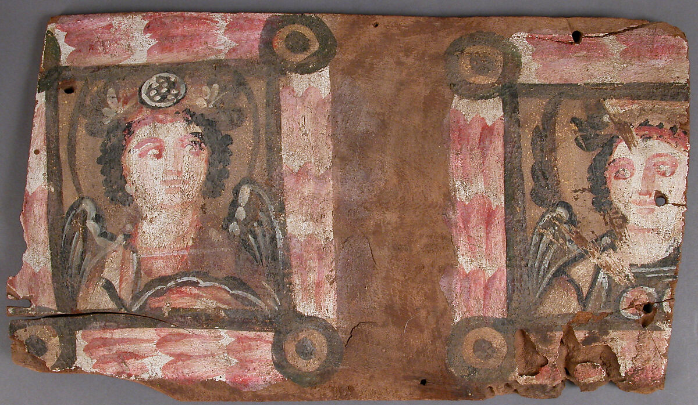
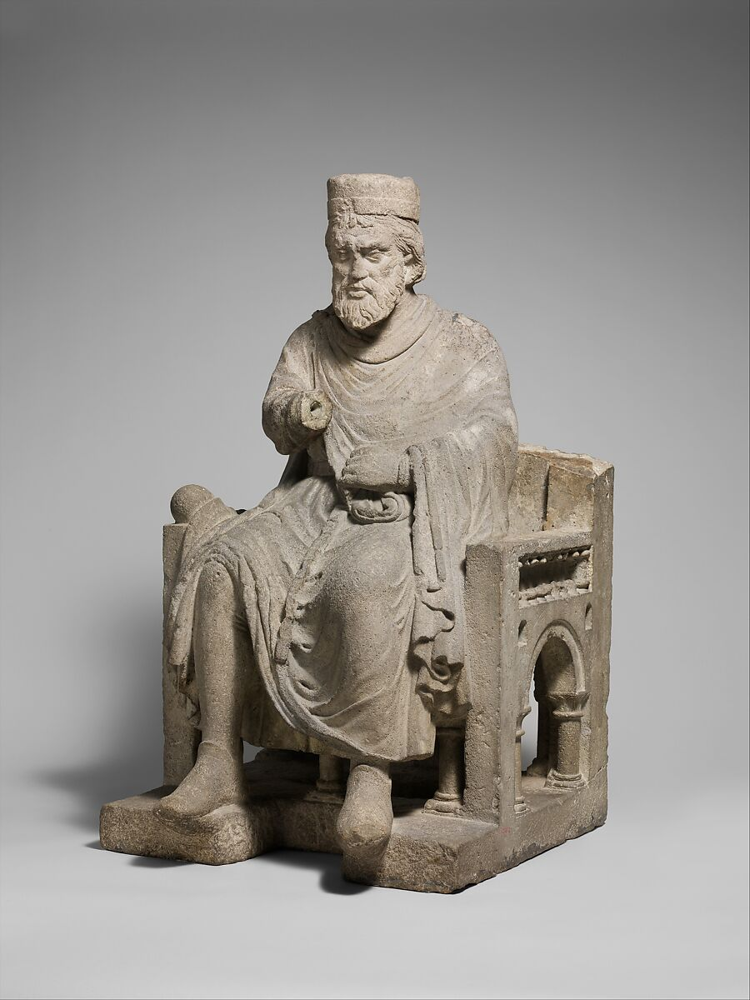
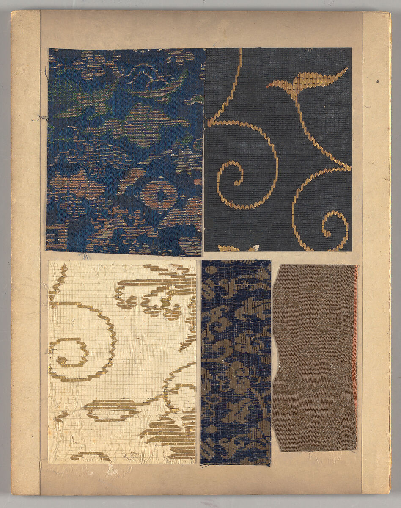
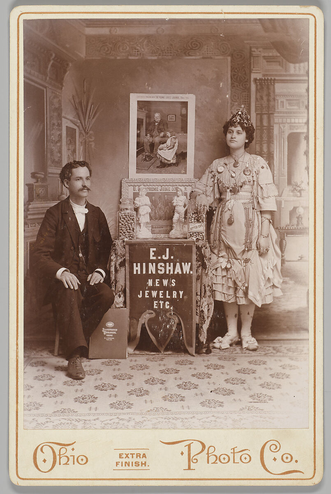

Pick one of the four ways people have expressed themselves. Each category has four media to explore.

Oil, acrylic, watercolor and graffiti.

Stone, bronze, ceramics and wood.

Weaving, embroidery, quilting and macramé.

Woodblock, lithography, etching and photography.